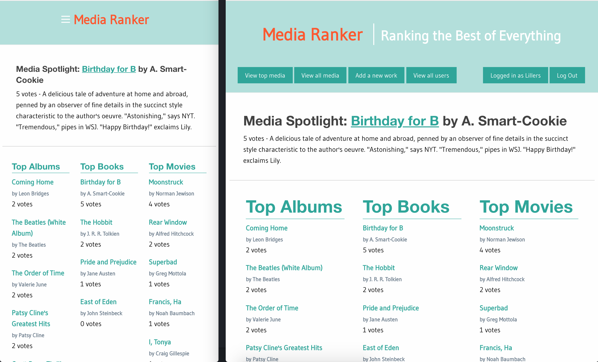
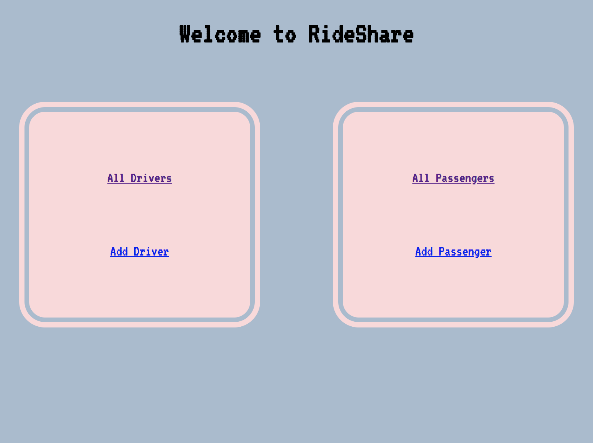
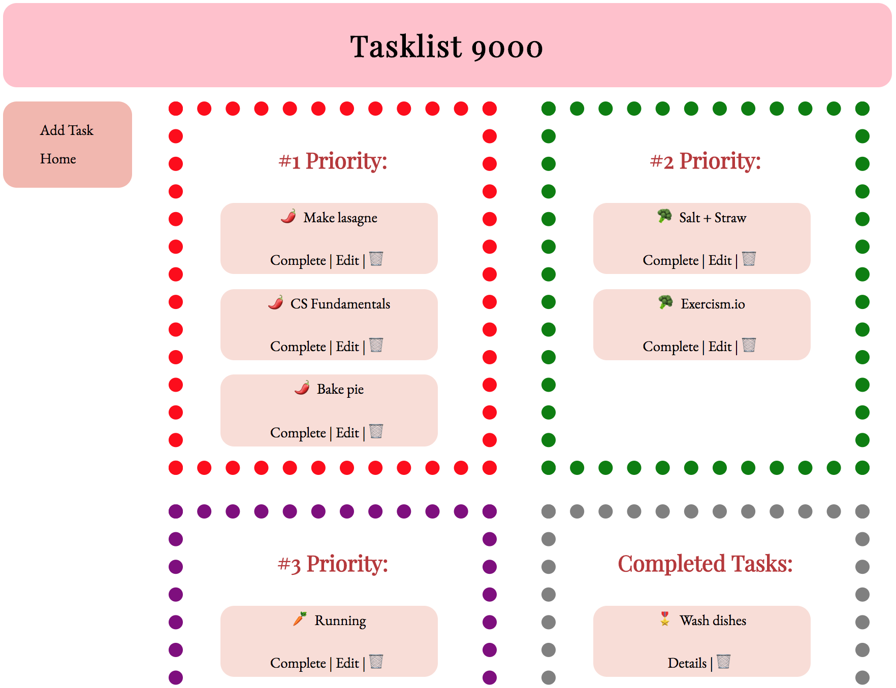

Ada Developers Academy c9 projects:
-
Trek
Prompt: Create a JavaScript app that allows users to search Ada's Trek API for trips; post reservations to the API; and post new trips.
Date: May 2018.
Languages: JavaScript, jQuery, HTML & CSS.
-
Muncher
Prompt: Create a rails web app that allows users to search the EDAMAM API for recipes.
Date: May 2018.
Languages: Ruby, HTML & CSS. Framework: Rails, Foundation
-

MediaRanker
Prompt: Create a rails web app that allows users to create and edit works. Restrict them to be able to upvote when logged in and only upvote for each work one time.
Date: April 2018.
Languages: Ruby, HTML & CSS. Framework: Rails, Foundation
-

RideShare
Prompt: Working with a pair partner, create and deploy a rideshare program.
Date: April 2018.
Languages: Ruby, Rails, HTML & CSS.
-

Tasklist
Prompt: Create and deploy a program to add and track tasks.
Date: March 2018.
Languages: Ruby, Rails, HTML & CSS.
-
Startrly
Prompt: Create a website from a given wireframe.
Date: March 2018.
Languages: HTML & CSS.
-

Hotel
Prompt: Create a hotel room and block reservation system using Ruby. Read and write to CSV files optional.
Date: March 2018.
Language: Ruby.
-

Word Guess
Prompt: Create a word guess game that tracks words letters and words entered by a user.
Date: February 2018.
Language: Ruby.
-

Random Menu
Prompt: Create a program to randomly offer a user a requested number of unique food items.
Date: February 2018.
Language: Ruby.